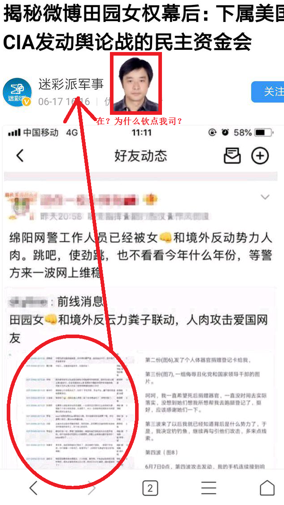
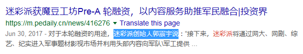
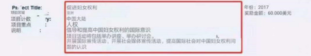

主要事迹 大肆钦点 
证据存档 

丑文共赏 --------- 揭秘微博田园女权幕后：下属美国CIA发动舆论战的民主资金会  近日，有网友声称此前在cherry机械键盘、钢琴家郎朗、“中国警察网”和“中国消防”微博下发表不良言论的众多“田园女权”最近又搞事情了，他们人肉了部分爱国网友，其中甚至还有绵阳网警的工作人员，还公开了部分人民公安的姓名。那么，究竟是谁给了这些人勇气，在社交媒体上大放厥词呢？ 有网友发现，这些阴阳怪气的“田园女权”有一个共同的特点就是他们的微博头像上都齐刷刷的带着彩虹，并且明显是有组织、有预谋的精准攻击。有网友认为，这些阴阳怪气的“田园女权”是一个某种专门攻击中国国家机关的组织。其实，网友们并没有猜错，全球90%以上的女权组织都是受到某些情报组织控制并支持的。当然有一些仅仅是为了钱，但是很大一部分是为了政治。
近日，有网友声称此前在cherry机械键盘、钢琴家郎朗、“中国警察网”和“中国消防”微博下发表不良言论的众多“田园女权”最近又搞事情了，他们人肉了部分爱国网友，其中甚至还有绵阳网警的工作人员，还公开了部分人民公安的姓名。那么，究竟是谁给了这些人勇气，在社交媒体上大放厥词呢？ 有网友发现，这些阴阳怪气的“田园女权”有一个共同的特点就是他们的微博头像上都齐刷刷的带着彩虹，并且明显是有组织、有预谋的精准攻击。有网友认为，这些阴阳怪气的“田园女权”是一个某种专门攻击中国国家机关的组织。其实，网友们并没有猜错，全球90%以上的女权组织都是受到某些情报组织控制并支持的。当然有一些仅仅是为了钱，但是很大一部分是为了政治。  最为典型的就是一个属于美国中央情报局的“民主基金会”，前美国国务卿希拉里就是该资金会的一员。该基金会每年会给各种各样的组织拨钱，以宣扬“民主”。如果你打开该基金会的网站，你会发现该组织不仅仅支持女权，还支持世界各国的分裂组织。
最为典型的就是一个属于美国中央情报局的“民主基金会”，前美国国务卿希拉里就是该资金会的一员。该基金会每年会给各种各样的组织拨钱，以宣扬“民主”。如果你打开该基金会的网站，你会发现该组织不仅仅支持女权，还支持世界各国的分裂组织。 
如果你了解美国中央情报局，你会发现这个机构几乎从来不搞情报工作，不然震惊世界的“9.11”事件发生时，这个所谓的CIA能毫不知情呢？那么，美国中央情报局具体具体负责什么呢？一个是反共，另一个就是宣传和颠覆政权，如今又一个好听的名字叫“颜色革命”。早在几十年前，美国的外交家和历史学家、普利策新闻奖获得者，也就是美国遏制政策创始人，“冷战”设计者之一的乔治·坎南就直言不讳的说：“美国没有文化部，中央情报局有责任来填补这个空缺。” 美国国家安全委员会早在1950年就对“宣传”做出了定义：有组织的运用新闻、别介和呼吁的方式散步信息和某种教义，以影响特定人群的思想和行为。由此来说，这就是典型的“心理战”。而美国政府认为“心理战”是一个国家有计划的运用宣传和其他非战争行动传播思想和信息，以影响其他国家人民的观点、态度、情绪和行为，使之有利于本国目标的实现。“心理战”专家理查德·科罗斯曼就曾说过“上乘的宣传看起来好像从未进行过一样，最好的宣传应该能让选择的对象沿着你所希望的方向行进，而他们却认为是自己选择的方向。” 由此来说，此次“田园女权”的行动实在是太失败了，更何况这种“云革命”家的水准实在是越来越次，不敢当众出来就算了，在互联网上搞事情也搞得一点水平都没有，可见这届CIA培养的“云革命”家不行...... --------- 本站评价 然而郭振宇少佐并不知道的事，我司并不认同田园女权，前往隔壁大脑升级 请，，， https://www.zhina.wiki/Portal:Group 基础信息 档案编号 SCP-ZHINA-2019-43 所属阵营 精赵 微博蛆 名言警句 其实，网友们并没有猜错，全球90%以上的女权组织都是受到某些情报组织控制并支持的。当然有一些仅仅是为了钱，但是很大一部分是为了政治。 照片 真实姓名 郭震宇 身份证号 32082719810103001X 家庭住址 江苏省南京市玄武区四牌楼2号 家庭住址 江苏省南京市建邺区恒山路127号5幢1-101室 手机号 13390906691 QQ 3963142 工作单位 南京信宁安科网络科技有限公司
(备注：创始人) 公司地址 江苏省南京市建邺区楠溪江东街85号金润国际广场1301室
(备注：南京信宁安科网络科技有限公司) 公司地址 江苏省南京市鼓楼区水佑岗8号万谷京东云智慧产业园503
(备注：南京信宁安科网络科技有限公司，曾用)